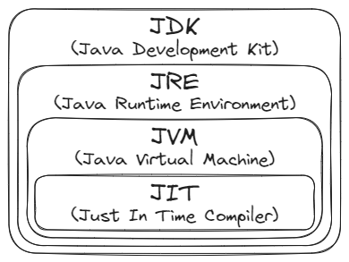

Pengenalan Dasar Java
Pemrograman merupakan sebuah proses dalam membuat serangkaian instruksi kepada komputer yang bertujuan untuk melakukan suatu tugas dengan menggunakan bahasa pemrograman tertentu. Salah satu bahasa pemrograman tersebut adalah Java.
Logo Bahasa Pemrograman Java
Java merupakan salah satu bahasa pemrograman yang cukup populer dan biasanya dikenal dengan istilah write once run anywhere. Hal ini berarti program yang sudah ditulis dapat dijalankan di mana saja walaupun berbeda sistem operasi, tanpa perlu disesuaikan. Oleh karena itu, Java dapat digunakan untuk membuat berbagai macam jenis program, seperti: console, desktop, website, atau Android.
Sejarah Singkat
Bahasa pemrograman Java awalnya dikembangkan sebagai bagian dari proyek “Green” di Sun Microsystem pada awal tahun 1990. Proyek tersebut dikerjakan oleh James Gosling, Patrick Naughton, Mike Sheridan, dan Bill Joy. Tujuannya adalah untuk menciptakan bahasa pemrograman yang dapat digunakan pada berbagai perangkat elektronik.
Setelah proyek tersebut selesai dibuat, bahasa pemrograman tersebut diberi nama Oak yang terinspirasi dari pohon ek yang ada di depan kantor mereka. Namun, dikarenakan sudah ada merek dagang lain dengan nama yang serupa, bahasa pemrograman tersebut diubah menjadi Java yang terinspirasi dari jenis kopi yang tumbuh di pulau Jawa.
Java Environment
{kind=link}
Proses Kompilasi dan Eksekusi Bahasa Pemrograman Java
Berikut adalah proses kompilasi dan eksekusi bahasa pemrograman Java. Pertama, pembuat program akan menuliskan kode yang mereka inginkan dalam bentuk file Java dengan ekstensi .java. Setelah selesai, kode tersebut akan di compile oleh Java Compiler menjadi bahasa yang dapat dimengerti oleh komputer dalam bentuk file Java Class dengan ekstensi .class. Proses ini disebut dengan proses compiling. Setelah itu, hasil compile tersebut akan dieksekusi oleh Java Virtual Machine (JVM).
{kind=link}
Hubungan antara JDK, JRE, JVM, dan JIT
JDK memiliki kepanjangan Java Development Kit, yang berfungsi untuk membuat dan mengembangkan program Java. Di dalamnya terdapat JRE, compiler, debugger, dan library yang diperlukan untuk membuat program Java.
JRE memiliki kepanjangan Java Runtime Environment, yang berfungsi sebagai lingkungan dimana program Java dapat dijalankan. Di dalamnya terdapat JVM dan library yang dibutuhkan untuk menjalankan program Java.
JVM memiliki kepanjangan Java Virtual Machine, yang berfungsi untuk mengubah byte-code menjadi machine readable code, sehingga program Java dapat dijalankan pada perangkat apapun. Di dalamnya terdapat Just In Time Compiler (JIT) yang berfungsi untuk mempercepat eksekusi program dengan menerjemahkan kode pada saat program berjalan.